Franz Pauer
Institut fuer Mathematik, Universitaet Innsbruck
A-6020 Innsbruck, Technikerstr. 25/7, Austria
Innsbruck, A-6020
Austria
E-mail:Franz.Pauer@uibk.ac.at
Abstract
Let K be a field and
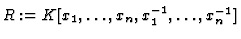
the K-algebra of Laurent polynomials over K. Let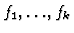
be elements of R and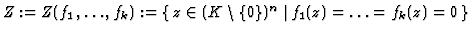
the set of their common zeros.Clearly, there are elements
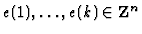
such that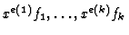
are polynomials in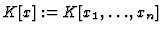
and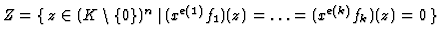
. Hence Z could be computed via a Gröbner basis (with respect to a pure lexicographic order) of the ideal generated by in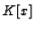
. But the degrees of these polynomials could be very high, hence in this talk I shall propose another method to solve Laurent polynomial equations. This method is based on results of the paper PU (Pauer, F., Unterkircher, A.: Gröbner Bases for Ideals in Laurent polynomial rings and their Application to Systems of Difference Equations. Preprint 1997, submitted to AAECC).Let
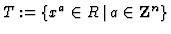
, let T0 be the submonoid of T generated by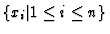
and Tj the submonoid generated by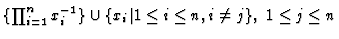
.Let
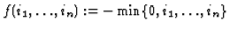
and let <lex be the lexicographic order on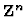
. Then we define a total order < on T as follows: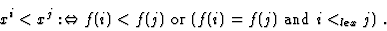
1 is the smallest element in T and
r<s implies tr<ts, for all
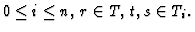
Moreover, all elements of T0 are smaller then any element of
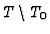
.By lt(f) we denote the leading term (with respect to <) of a non-zero Laurent polynomial
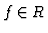
.
Definition: Let J be an ideal in R and let Gbe a finite subset of
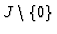
. Then G is a Gröbner basis (with respect to <) of J iff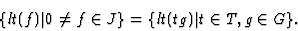
(Since < is not a term order, in general
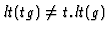
!)
Proposition (see PU): For every ideal in R a
Gröbner basis can be computed in a finite number of steps.
For the sake of simlicity let us assume that Z is
finite. Let J be the ideal in R generated by the Laurent
polynomials
and let xn be the smallest
element in
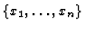
. Then the ideal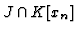
in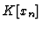
is not zero. To get an algorithm for the computation of Z it is sufficient to know how to compute a finite system of generators of this ideal. Similar to the well-known case of polynomial ideals we obtain the following
Proposition: Let G be a Gröbner basis of J with
respect to <. For
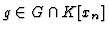
let a(g) be the maximal nonnegative integer such that xna(g) divides g (in ). Then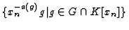
generates the ideal .